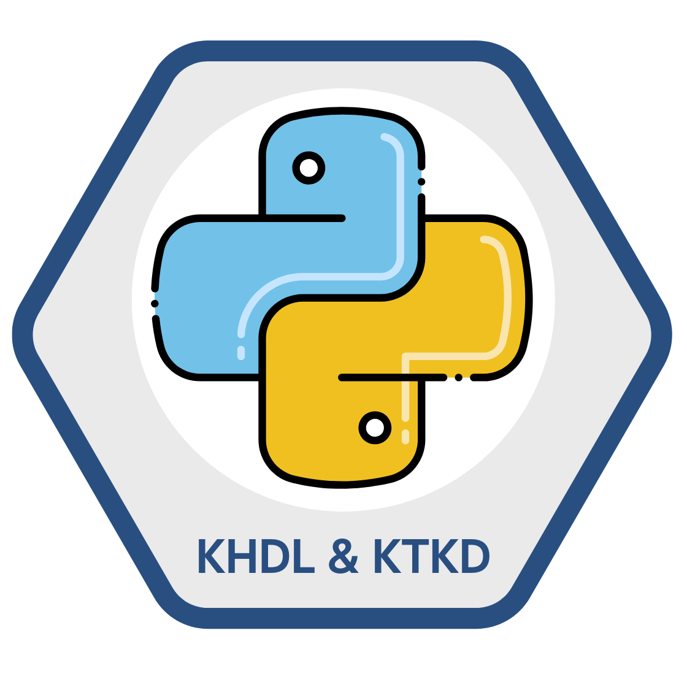

Khoa học dữ liệu trong Kinh tế và Kinh doanh#
Các tác giả: TS. Nguyễn Quang Huy, TS. Nguyễn Trung Thành, PGS. TS. Trần Thị Bích, TS. Phạm Xuan Lâm, TS. Nguyễn Thị Bạch Tuyết, TS. Nguyễn Mạnh Thế 🚀
Khoa học dữ liệu (KHDL) là ngành khoa học kết hợp giữa toán học - xác suất - thống kê với khoa học máy tính và kiến thức chuyên môn trong một lĩnh vực cụ thể như kinh tế, tài chính, y học, giáo dục, thể thao, v.v. để khám phá những thông tin hữu ích và có giá trị nằm trong dữ liệu liên quan đến lĩnh vực chuyên môn đó. Những thông tin hữu ích này được sử dụng để hướng dẫn việc ra quyết định và lập kế hoạch chiến lược cho các cơ quan, tổ chức, doanh nghiệp và các cá nhân hoạt động trong lĩnh vực này.
{kind=link}
Cuốn sách Khoa học dữ liệu trong Kinh tế và Kinh doanh được viết xuất phát từ nhu cầu học tập và tìm hiểu về KHDL của những bạn đọc đang học tập, nghiên cứu và làm việc trong lĩnh vực kinh tế, quản lý, quản trị kinh doanh. Cuốn sách ít tập trung vào các khái niệm mang tính kỹ thuật trong toán học hay khoa học máy tính, mà tập trung nhiều hơn vào việc mô tả và áp dụng các phương pháp trên những vấn đề cụ thể. Trong mỗi chương đều sẽ có phần thực hành sử dụng Ngôn ngữ lập trình Python để minh họa cách triển khai các phương pháp kỹ thuật. Những phần thực hành này sẽ cung cấp cho bạn đọc những trải nghiệm thực tiễn có giá trị.
Nếu có câu hỏi về nội dung của cuốn sách, bạn đọc có thể liên hệ với nhóm tác giả từ website của Trường Công nghệ hoặc liên lạc qua địa chỉ email của chúng tôi truongcongnghe@neu.edu.vn
Nội dung chính của cuốn sách#
Cuốn sách Khoa học dữ liệu trong Kinh tế và Kinh doanh – Ứng dụng với Python được thiết kế nhằm cung cấp nền tảng cơ bản về khoa học dữ liệu, tập trung vào các ứng dụng thực tiễn trong lĩnh vực kinh tế và kinh doanh. Nội dung sách được tổ chức thành các chương với cấu trúc logic, bám sát quy trình phân tích và mô hình hóa dữ liệu.
-
Các chương 1, 2 và 3 trình bày tổng quan về khoa học dữ liệu, vai trò và ứng dụng của khoa học dữ liệu trong bối cảnh kinh tế – kinh doanh hiện đại. Đồng thời, các chương này giới thiệu các nguyên lý cơ bản trong phân tích dữ liệu và xây dựng mô hình dữ liệu.
-
Các chương 4,5, và 6 giới thiệu ngôn ngữ lập trình Python và các thư viện phổ biến được sử dụng trong phân tích dữ liệu, tạo nền tảng kỹ thuật cho các nội dung chuyên sâu hơn ở các chương sau.
-
Các chương 7, 8, 9 và 10 tập trung vào các kỹ thuật tiền xử lý dữ liệu, bao gồm: nhập liệu, làm sạch dữ liệu, biến đổi và tổ chức lại dữ liệu, cũng như trực quan hóa dữ liệu phục vụ cho phân tích và ra quyết định.
-
Chương 11 trình bày các kỹ thuật xây dựng mô hình học máy có giám sát, bao gồm: mô hình hồi quy tuyến tính cho các bài toán dự báo biến liên tục; mô hình tuyến tính cho phân loại, chẳng hạn như hồi quy logistic; các phương pháp chính quy hóa như hồi quy Ridge và Lasso nhằm giảm thiểu hiện tượng quá khớp và cải thiện khả năng tổng quát hóa của mô hình; bên cạnh đó là mô hình cây quyết định và các phương pháp tập hợp cây như rừng ngẫu nhiên và học tăng cường, giúp nâng cao độ chính xác của mô hình thông qua việc kết hợp nhiều cây.
Phần thực hành được thiết kế song song với nội dung lý thuyết của từng chương, cung cấp các bài tập và ví dụ thực tế nhằm tăng cường khả năng vận dụng kiến thức và rèn luyện kỹ năng phân tích dữ liệu bằng Python.
Tại sao cuốn sách lại sử dụng ngôn ngữ Python#
Python là một ngôn ngữ lập trình bậc cao, có cú pháp rõ ràng và dễ học, được thiết kế để nhấn mạnh
vào khả năng đọc hiểu. Trong lĩnh vực Khoa học dữ liệu, Python được xem là một trong những ngôn ngữ
phổ biến và hiệu quả nhất, nhờ vào hệ sinh thái phong phú gồm các thư viện hỗ trợ phân tích dữ liệu
(như pandas, numpy), trực quan hóa dữ liệu
(như matplotlib, seaborn, plotly), mô hình học máy (như
scikit-learn, xgboost, lightgbm) và trí tuệ nhân tạo
(như tensorflow, pytorch).
Ưu điểm nổi bật của Python trong Khoa học dữ liệu không chỉ nằm ở tính đơn giản và khả năng biểu đạt cao, mà còn ở cộng đồng sử dụng rộng lớn, tài nguyên học tập dồi dào và khả năng tích hợp dễ dàng với các hệ thống và ngôn ngữ khác (như R, SQL, C/C++).
Bên cạnh Python, vẫn tồn tại một số lựa chọn thay thế và bổ sung hữu ích. Ngôn ngữ R được đánh giá cao trong các bài toán thống kê truyền thống và trực quan hóa dữ liệu chuyên sâu, đặc biệt trong lĩnh vực xã hội và kinh tế lượng. Julia là một ngôn ngữ mới nổi, có tốc độ thực thi cao, phù hợp với các tác vụ tính toán hiệu năng lớn. Ngoài ra, SQL là công cụ không thể thiếu để truy vấn dữ liệu từ hệ quản trị cơ sở dữ liệu quan hệ, trong khi các phần mềm như Excel, Tableau hay Power BI có thể được sử dụng như công cụ bổ trợ trực quan và phân tích đơn giản trong môi trường doanh nghiệp.
Để cài đặt Python, bạn đọc có nhiều lựa chọn. Chúng tôi giới thiệu hai lựa chọn phổ biến nhất
Cài đặt Python bằng Anaconda#
Anaconda là một bộ phân phối Python chuyên dụng cho Khoa học dữ liệu, đi kèm sẵn các thư viện như numpy, pandas, matplotlib, scikit-learn, và đặc biệt là Jupyter Notebook.
-
Bước 1: Truy cập trang web https://www.anaconda.com/products/distribution
-
Bước 2: Chọn hệ điều hành phù hợp (Windows, macOS, Linux) và tải về bản cài đặt
-
Bước 3: Cài đặt theo hướng dẫn mặc định của hệ điều hành
-
Bước 4: Sau khi cài đặt xong, mở Anaconda Navigator hoặc dùng terminal/command prompt chạy:
jupyter notebook
để mở giao diện Jupyter Notebook trong trình duyệt
Cài đặt Python thủ công và cài Jupyter Notebook#
Nếu không dùng Anaconda, bạn có thể cài riêng Python và Jupyter theo các bước sau:
-
Bước 1: Truy cập địa chỉ https://www.python.org/downloads và tải phiên bản mới nhất
-
Bước 2: Trong quá trình cài đặt, đảm bảo tích chọn “Add Python to PATH”
-
Bước 3: Mở Command Prompt (Windows) hoặc Terminal (macOS/Linux), kiểm tra phiên bản Python:
python --version
-
Bước 4: Cài đặt Jupyter Notebook bằng lệnh:
pip install notebook
-
Bước 5: Khởi động Jupyter Notebook:
jupyter notebook
Giao diện sẽ tự động mở trong trình duyệt web.
Lưu ý:
-
Jupyter Notebook cho phép viết mã Python kết hợp với văn bản trình bày, rất phù hợp để học tập, giảng dạy và phân tích dữ liệu có giải thích.
-
Các file notebook có định dạng
.ipynbvà có thể được mở lại để tiếp tục thực hành hoặc chia sẻ. -
Ngoài ra, bạn cũng có thể thử Google Colab để chạy Jupyter Notebook trực tuyến mà không cần cài đặt, miễn là có tài khoản Google.
Các tập dữ liệu được sử dụng thường xuyên trong cuốn sách#
|
STT |
Tên dữ liệu |
Miêu tả dữ liệu |
|---|---|---|
|
1 |
Dữ liệu Iris |
Bộ dữ liệu cổ điển trong học máy, gồm 150 quan sát về ba loài hoa Iris (Setosa, Versicolor, Virginica) với các đặc trưng như chiều dài và chiều rộng của cánh và đài hoa. |
|
2 |
Dữ liệu giá nhà Boston |
Dữ liệu chứa thông tin về giá nhà tại các vùng ngoại ô Boston, gồm 506 quan sát với 13 biến đầu vào (ví dụ: tỷ lệ tội phạm, chất lượng trường học, v.v.) và giá nhà trung bình. |
|
3 |
Dữ liệu giá nhà Hà Nội |
Dữ liệu thực tế thu thập từ các nguồn bất động sản tại Hà Nội, bao gồm các thông tin như diện tích, số phòng, địa điểm và giá nhà theo đơn vị triệu đồng/m² hoặc tỷ đồng. |
|
4 |
Dữ liệu ung thư Wisconsin |
Dữ liệu y tế với 569 mẫu tế bào, phục vụ phân loại khối u là lành tính hay ác tính, gồm nhiều đặc trưng về hình dạng, kết cấu và kích thước tế bào. |
|
5 |
Dữ liệu chiến dịch marketing của ngân hàng |
Dữ liệu từ các chiến dịch marketing trực tiếp của một ngân hàng Bồ Đào Nha, gồm thông tin khách hàng (tuổi, nghề nghiệp, tình trạng hôn nhân, v.v.) và kết quả chiến dịch (có đăng ký tiền gửi hay không). |
Đôi lời từ các tác giả: “Cuốn sách này dành cho bất kỳ ai quan tâm đến việc sử dụng Khoa học dữ liệu và các phương pháp thống kê hiện đại để giải quyết các vấn đề trong học tập và công việc hàng ngày. Độc giả có thể là bất kỳ ai, từ các nhà khoa học, kỹ sư, nhà phân tích dữ liệu, nhà nghiên cứu định lượng, cho đến những cá nhân có nền tảng kỹ thuật ít hơn như sinh viên, học viên cao học trong các lĩnh vực không định lượng như khoa học xã hội hoặc kinh doanh. Mặc dù không bắt buộc, chúng tôi kỳ vọng rằng bạn đọc đã từng học ít nhất một khóa cơ bản về xác suất thống kê và một khóa về lập trình.”
Lời cảm ơn: “Xin chân thành cảm ơn các đồng nghiệp tại Trường Công nghệ và Đại học Kinh tế Quốc dân nói chung đã đồng hành cùng với chúng tôi trong suốt quá trình hoàn thành cuốn sách này. Nhóm tác giả xin bày tỏ lòng biết ơn sâu sắc tới cộng đồng phát triển Python và dự án Jupyter Book – những người đã không ngừng nỗ lực xây dựng, duy trì và chia sẻ các nền tảng mã nguồn mở mạnh mẽ, linh hoạt và dễ tiếp cận cho cộng đồng học thuật và công nghệ. Chính nhờ các công cụ tuyệt vời như Python, Jupyter Notebook, và Jupyter Book, quá trình xây dựng, trình bày và xuất bản nội dung cuốn sách này dưới dạng trực tuyến trở nên vô cùng thuận tiện và hiệu quả!”